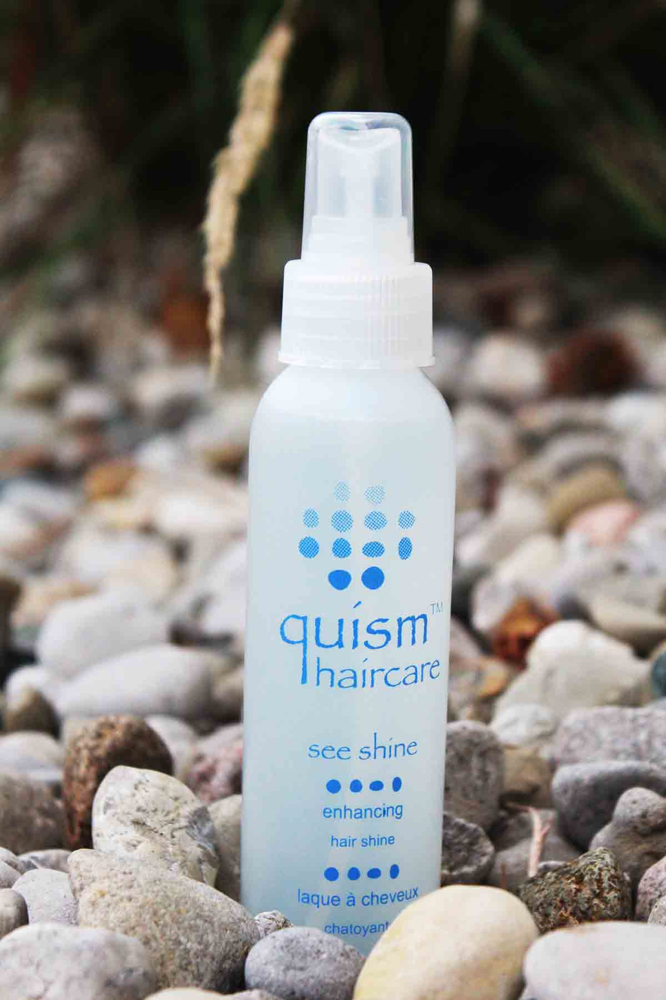
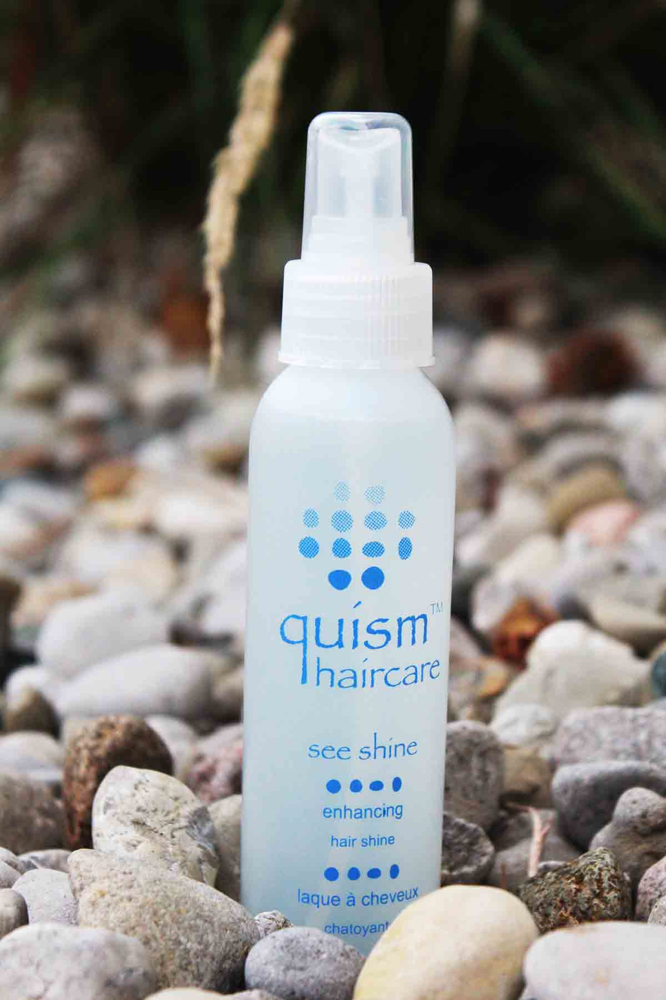

The beginning of a life with beautiful hair can be yours. Whether your hair needs moisture, strength, or control, Quism is designed for your hair needs.” Let Quism guide and help you achieve your goals for your hair. Quism’s founders and clients are excited to share with you how the products have benefited their life.
About Quism
Our mission at Quism is to create a natural hair product alternative for clients that offers the purest ingredients and countless benefits. Quism looks to bring new meaning to form and function in the hair industry. We believe that clients should be able to express their uniqueness, while being able to obtain all the benefits of nature.
Quism emerged many years ago when it became apparent that although trends are fun, what is really important is healthy beautiful hair. We have all experienced the disappointment of trendy hair products that promise us everything, yet fail to deliver when put to use. Quism looks beyond these fads and brings a healthy focus to the very integrity of hair itself. Through years of research, Quism’s founders have created an inspired product line that is more natural and organic than all products on the current market. Quism’s ingredients like infused floral water, bioactive botanicals, and crystallized jojoba penetrate deep into the hair shaft to result in moisture, flexibility, and shine, without weight. Clients can see and feel the difference through both salon use and at home.Quism strives to bring the best results to its clients. Simplicity is key. Quism looks and goes far beyond the “pretty package” to ensure the ultimate in health and style. The product line is solely sold in salons and spas because Quism’s founders share a firm belief that proper education is the key to receiving incredible results. Quism believes the transparency of ingredients found in all products for clients' wellbeing, along with the purest products possible, create a lasting relationship built on trust.
Cheveux 1
Cheveux 2
Cheveux 3
Cheveux 1 is a sulfate free shampoo that will replenish your hair and scalp each time you use it. This formula is infused with pure plant botanical extracts that will prolong rich colouring, while gently removing impurities.
Clients express that this is the gentlest shampoo they have ever used and will reverse hair damage with daily usage.
Cheveux 2 is a normalizing SLS-free shampoo that contains beneficial herb and plant botanical extracts. This shampoo hydrates and revitalizes all hair types.
Cheveux 3 is a SLS-free, clarifying and volumizing shampoo that contains beneficial herb and plant botanical extracts. This shampoo replenishes and revitalizes all hair types.
Cheveux 1
Cheveux 2
Cheveux 3
Tru
Est
Chen
Tru hydrates and strengthens hair through a conditioning mist application. Hair will benefit from tru’s soothing natural antioxidants that will nourish and protect hair against nature’s harmful elements.
Stylists find this product to be the best porosity equalizer and recognize the improvement of client’s hair after one salon service.
Est replenishes the hair’s moisture, leaving it in a natural state of health. This intense conditioner will leave hair with flexibility and volume.
Through the process of ionic technology plus an exclusive botanical based ingredient, Chen maintains a true moisture balance within the hair.
Clients with the most damaged hair rave about this product for the amazing repairing effects.
Tru
Est
Chen
Pure Serum
Straight Shine
So Fo
Liquid Gel
Quisit
Pure Serum continues to rebuild, strengthen and straighten hair over time. This is a natural alternative and chemical free product that helps to transform even the most challenged hair.
Clients love this product because it cuts their styling time in half!
Straight Shine will leave your hair soft, shiny and manageable. The emollient rich formula strengthens, eliminates frizz and even subdues the most unmanageable hair.
Stylists are amazed by the results of this product. It not only straightens hair naturally but also improves the condition of the hair with extended use.
So Fo is created with certified organic ingredients to infuse hair with revitalizing extracts, which brings back natural luster and shine to hair. This light-medium hold mousse enhances volume and control.
Sofo is adored by stylists and clients for its ability to mix well with other Quism products. This product makes the thinnest hair feel thick.
Liquid Gel is a sculpting volumizing gel, which provides extra body and flexibility for all types of hair. This gel is a flexible styling gel with light to medium hold and adds thermal protection.
Quisit is perfect for dry and coarse hair. It creates soft separation lines, improves luster and shine, while providing soft control and hold.
Quisit is applied onto extremely wet hair due to its high concentration. The small amount applied, results in incredible control and shine for coarse and challenging hair.
Pure Serum
Straight Shine
So Fo
Liquid Gel
Quisit
 

Critique
See Shine
Critique compliments all hair types. This formula is created with exotic herbs in order to enhance flexibility and shine. Critique is quick drying and is a great creative finishing spray.
Clients love to refer to this product as their “play spray” and like that it does not make their hair feel sticky or stiff.
See Shine eliminates dry, dull, frizzy hair and promotes brilliant shine for all types of hair without weighing hair down. There is also a natural sunscreen in this product to protect hair from harmful rays.
Critique
See Shine
Education and Sales:
frank@quismhaircare.com
Media and Communications:
sarah@quismhaircare.com
1.877.in.quism (1.877.467.8476)
or (1.519.332.6829)
Like Quism Haircare
on Facebook
Contact Us
Quism seeks to be as environmentally friendly as possible, yet Quism’s founders realize that many stylists and clients still desire a selection of aerosol sprays and styling aids. These products follow Quism’s natural standards and compliment their entire product line. For more information about these products, please contact a Quism representative.
Our founders are delighted that you are interested in contacting a Quism representative. For more information about the line, to request samples, or to have a representative visit your salon please e-mail or call a representative.